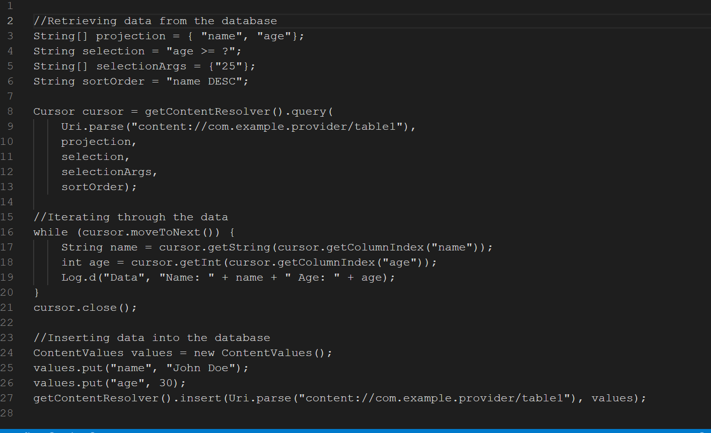

UnitNo 1. Mobile application development architectures {Weightage 14%}
UnitNo 2. Creating Android Application {Weightage 20%}
2.3. Activity and Activity Life Cycle
UnitNo 3. Interactivity Tools {Weightage 20%}
UnitNo 4. Interaction with Database {Weightage 16%}
4.1. Introduction to Database (SQLite and Firebase)
4.2. Cursors and content values
In Android, a Cursor is a class that provides a way to access and manipulate data stored in a database. It is used to retrieve data from a SQLite database and display it in a way that is easily consumable by the user. The Cursor class provides various methods that allow you to navigate through the data, such as moveToNext() and moveToPrevious().
ContentValues is a class that stores a set of key-value pairs, where the key represents the column name in a database table and the value represents the data to be stored in that column. It is used to insert or update data in a database table. The ContentValues class provides various methods to add data, such as put(), putAll() and so on.
4.3. CURD Operations
In Android, CRUD stands for Create, Read, Update, and Delete,
which are the four basic operations that can be performed on a
database. These operations can be performed using the SQLite
database that is built-in to Android.
Create: To insert new data into the database, you can use the
`insert()` method of the `SQLiteDatabase` class.
Read: To retrieve data from the database, you can use the
`query()` method of the `SQLiteDatabase` class or use a Cursor
object to iterate through the data.
Update: To update existing data in the database, you can use
the `update()` method of the `SQLiteDatabase` class.
Delete: To delete data from the database, you can use the
`delete() `method of the SQLiteDatabase class.
 curd.png)
1 1. Mobile application development architectures
1 1. Mobile application development architectures
There are several architectures that can be used for mobile
application development, including:
Native Architecture: This architecture involves using the
specific programming languages and software development kits
(SDKs) provided by the mobile operating system (OS) vendors,
such as Java for Android and Swift for iOS.
Hybrid Architecture: This architecture involves using web
technologies such as HTML, CSS, and JavaScript to build mobile
applications that can run on multiple platforms. Frameworks
such as React Native and Cordova can be used to create hybrid
mobile applications.
Cross-Platform Architecture: This architecture involves using
a single codebase to create mobile applications that can run
on multiple platforms. Frameworks such as Xamarin, Flutter,
and Ionic can be used to create cross-platform mobile
applications.
Cloud-Based Architecture: This architecture involves using
cloud services to build and run mobile applications. This
approach enables developers to build mobile applications that
can scale and adapt to changing requirements.
Ultimately, the choice of architecture will depend on the
specific requirements of the mobile application and the skills
of the development team.
1.1. Introduction to Mobile Application technologies
Mobile application technologies refer to the various tools,
frameworks, and programming languages that are used to develop
mobile apps for different platforms, such as Android, iOS, and
Windows. Some popular mobile application technologies include:
Native Development: This refers to the use of specific
programming languages and SDKs provided by the mobile OS
vendors to build apps that are optimized for a particular
platform. For example, Java and Kotlin for Android and Swift
and Objective-C for iOS.
Hybrid Development: This refers to the use of web technologies
such as HTML, CSS, and JavaScript to create mobile apps that
can run on multiple platforms. Frameworks such as Cordova,
PhoneGap, and Ionic are popular for hybrid app development.
Cross-Platform Development: This refers to the use of a single
codebase to create apps that can run on multiple platforms.
Frameworks such as Xamarin, React Native, and Flutter are
popular for cross-platform app development.
Cloud-Based Development: This refers to the use of cloud
services to build and run mobile apps. This approach enables
developers to build mobile apps that can scale and adapt to
changing requirements.
Backend as a Service (BaaS): This is a cloud service, which
enables developers to build apps and provides various
functionalities such as push notifications, analytics, social
media integration, etc. Firebase, AWS, Parse, etc. are some
popular BaaS.
Mobile App Development Frameworks: Some popular Mobile App
Development Frameworks are React Native, Xamarin, PhoneGap,
Ionic, and Flutter.
Ultimately, the choice of technology will depend on the
specific requirements of the mobile application and the skills
of the development team.
1.2. Android Architecture
The Android operating system has a layered architecture that
consists of the following components:
Linux kernel: The Linux kernel provides the basic system
services such as memory management, process management, and
device management. It also acts as an abstraction layer
between the hardware and the rest of the software stack.
Libraries and Android Runtime: The libraries and the Android
Runtime (ART) provide the core functionality of the Android
operating system, such as the core Java libraries, the Dalvik
Virtual Machine (DVM), and the Android Runtime (ART). These
components are responsible for running the Android
applications.
Application Framework: The Application Framework is a set of
reusable components and services that developers can use to
build their applications. This includes components such as
Activities, Services, Broadcast Receivers, and Content
Providers.
Applications: The top layer of the Android architecture is the
application layer, where the actual Android apps are
installed. These apps are built using the Application
Framework and can access the core functionality of the
operating system through the libraries and Android Runtime.
Native Libraries: Android also includes a set of C/C++
libraries, which are exposed to developers through the Java
Native Interface (JNI) framework. This allows developers to
write performance-critical parts of their apps in native code
for better performance.
Surface Manager: Surface Manager is responsible for
compositing the UI elements and managing the display of
different UI elements.
Android Libraries: Android Libraries are pre-built libraries
that can be used by the developers to perform tasks like
database access, network access, media playback, etc.
This layered architecture allows developers to build their
apps using the Application Framework while still being able to
access the core functionality of the operating system through
the libraries and Android Runtime.
1.3. IOS Architecture
The iOS operating system has a layered architecture that
consists of the following components:
Kernel: The kernel provides the basic system services such as
memory management, process management, and device management.
It also acts as an abstraction layer between the hardware and
the rest of the software stack.
Core Services: Core Services provides a set of essential
services for iOS apps such as the Core Foundation and Core
Location frameworks. These frameworks provide functionalities
like strings, collections, network access, location services,
etc.
Media Services: Media Services provides a set of frameworks
that allow the iOS apps to handle multimedia content like
images, videos, and audio. These frameworks include Core
Animation, Core Audio, Core Media, Core Video, etc.
Cocoa Touch: The Cocoa Touch layer is the topmost layer of the
iOS architecture. It contains the frameworks that define the
iOS user interface, such as UIKit, which provides the basic UI
elements and controls, and event handling.
Applications: The top layer of the iOS architecture is the
application layer, where the actual iOS apps are installed.
These apps are built using the Cocoa Touch frameworks and can
access the core functionality of the operating system through
the Core Services and Media Services.
This layered architecture allows developers to build their
apps using the Cocoa Touch frameworks while still being able
to access the core functionality of the operating system
through the Core Services and Media Services.
It's worth mentioning that, Apple also provides SwiftUI, which
is a new framework that allows developers to build user
interfaces in a declarative way. SwiftUI uses a new approach
to building UIs that uses a single source of truth for the
state of the app and automatically updates the UI when the
state changes, simplifying the process of building complex
UIs.
1.4. Windows Architecture
The Windows operating system has a layered architecture that
consists of the following components:
Kernel: The kernel is the core of the Windows operating system
and is responsible for providing basic system services such as
memory management, process management, and device management.
It also acts as an abstraction layer between the hardware and
the rest of the software stack.
Executive: The Executive layer is built on top of the kernel
and provides a set of services that are essential for the
functioning of the operating system. These services include
the I/O manager, process manager, and memory manager.
Hardware Abstraction Layer (HAL): The HAL is a layer that sits
between the hardware and the rest of the operating system. It
provides a standard interface for the kernel to interact with
the hardware and abstracts away the differences between
different hardware platforms.
User Mode: The User Mode layer is where the majority of the
Windows operating system runs. It includes user-facing
features such as the Windows Shell, the File Explorer, and the
Control Panel. It also includes the Win32 API and the .NET
Framework, which are used by developers to build Windows
applications.
Applications: The top layer of the Windows architecture is the
application layer, where the actual Windows applications are
installed. These apps are built using the Win32 API and the
.NET Framework and can access the core functionality of the
operating system through the User Mode layer.
Windows API: Windows API, also known as Win32 API, is a set of
C/C++ libraries that provide access to the core functionality
of the Windows operating system. Developers can use these
libraries to build Windows applications.
This layered architecture allows developers to build their
apps using the Win32 API and the .NET Framework while still
being able to access the core functionality of the operating
system through the User Mode layer.
1.5. Hybrid Architecture
Hybrid mobile application architecture refers to the use of a
combination of web technologies (such as HTML, CSS, and
JavaScript) and native technologies (such as Java for Android
or Swift/Objective-C for iOS) to develop mobile applications.
A hybrid mobile app is essentially a web app that is packaged
as a native app and runs inside a native container, such as a
WebView. This allows the app to access native features of the
device, such as the camera, GPS, and storage, through a bridge
between the web and native code.
Hybrid app development typically involves the use of a hybrid
mobile app development framework, such as Apache Cordova
(formerly PhoneGap), Ionic, React Native, or Xamarin, which
provides a set of APIs that allow developers to access native
features of the device.
The main advantage of hybrid mobile app architecture is that
it allows developers to build an app that can run on multiple
platforms using a single codebase. This can save time and
money compared to building separate native apps for each
platform. However, it's important to note that hybrid apps may
not perform as well as native apps and may not have the same
level of access to device features.
Hybrid app development can be done in different ways, for
example, one of them is by using WebView that allows to run
the web application in the native app, other approach is by
using React Native, which allows to use React for building the
app UI and interact with native components.
In summary, Hybrid mobile app architecture is a combination of
web and native technologies that allows developers to build a
single codebase that runs on multiple platforms, but may not
perform as well as native apps and may not have the same level
of access to device features.
2 2. Creating Android Application
2 2. Creating Android Application
Creating an Android application typically involves the
following steps:
Installing and setting up the development environment: To
develop an Android application, you will need to install the
Android Studio development environment and the Android SDK
(Software Development Kit). Android Studio is based on
IntelliJ IDEA and provides a comprehensive set of tools for
developing, testing, and debugging Android apps. The Android
SDK includes the necessary libraries and tools for building
Android apps.
Designing the user interface: The user interface (UI) of an
Android app is typically designed using XML layout files.
These files define the layout and appearance of the app's
screens and controls. The Android Studio provides a layout
editor that allows you to design the UI visually and preview
it on different device configurations.
Writing the code: The code for an Android app is typically
written in Java or Kotlin. The Android SDK provides a set of
APIs that allow you to access device features such as the
camera, GPS, and storage. The code can be organized using the
Model-View-Controller (MVC) pattern, or other patterns such as
MVP (Model-View-Presenter) or MVVM (Model-View-ViewModel).
Building and testing the app: Once the code is written, you
can use Android Studio to build and test the app. The build
process generates an APK (Android Package) file that contains
the compiled code and resources of the app. You can test the
app on an emulator or a real device. The emulator is a virtual
device that mimics the characteristics of a real Android
device, allowing you to test the app in a variety of
configurations.
Publishing the app: Once the app is ready, you can publish it
on the Google Play Store. To do this, you need to sign up as a
developer, create a listing for the app, and upload the APK
file. You will also need to provide screenshots, a
description, and other information about the app. After the
app is reviewed and approved by Google, it will be available
for download on the Google Play Store.
It is important to note that creating an Android application
is a complex process that requires a good understanding of
programming and the Android SDK. It also requires testing and
debugging to ensure that the app works correctly on different
devices and configurations.
2.1. Creating Android project
Creating an Android project in Android Studio involves the
following steps:
Open Android Studio and select "Start a new Android Studio
project" from the welcome screen or go to "File" -> "New" ->
"New Project"
In the "Create New Project" window, provide a name for the
project and select a location to save it. Also, select the
"Minimum SDK" that you want to support. This is the lowest
version of Android that your app will run on.
Select the type of the project you want to create, for
example, if you want to create a simple app with a single
screen, you can select "Empty Activity", or if you want to
create a master-detail app, you can select "Master/Detail
Flow"
In the next window, you can customize the activity, layout
file, and menu resource file or you can use the default
settings.
Click on "Finish" to create the project.
Once the project is created, you will see the project files
and folders in the Project pane on the left side of the
screen. You can start editing the code, layout files, and
resources in the editor pane in the center of the screen.
You will find the MainActivity.java file in the
app->java->your package name folder, this file contains the
main code for the app, and you can edit it to add
functionality to your app.
You will find the activity_main.xml file in the
app->res->layout folder, this file contains the layout for the
main activity of your app, and you can edit it to change the
appearance of your app.
You can use the Android Studio built-in tools such as the
layout editor, and the debugging tools to create, test, and
debug your app.
It's important to note that this is just a basic overview of
creating an Android project in Android Studio, and there are
many other aspects to consider when developing an Android
application such as adding dependencies, handling user inputs,
and implementing navigation.
2.2. Project Structure
The project structure of an Android app in Android Studio is
organized into several different folders and files, including:
app - This is the main folder that contains all the code and
resources of the app.
java - This folder contains the Java or Kotlin source code of
the app. It is organized into package names that match the
package name of the app.
res - This folder contains all the resources of the app, such
as layout files, drawable files, and values files.
drawable - This folder contains image resources that can be
used in the app.
layout - This folder contains XML layout files that define the
layout of the app's screens and controls.
values - This folder contains XML files that define various
resources such as strings, colors, and dimensions that can be
used in the app.
Manifest - The AndroidManifest.xml file is an important file
that contains the app's manifest, which defines the app's
package name, version, and required permissions.
Gradle Scripts - This folder contains the build configuration
files for the app, including the build.gradle files that
define the app's dependencies and build settings.
Assets - This folder contains any assets that are not compiled
into the final APK, such as JSON files or fonts.
libs - This folder contains any external libraries that the
app uses.
Proguard - This folder contains the Proguard configuration
files that are used to optimize and shrink the app's code.
It's important to note that this is just a high-level overview
of the project structure of an Android app, and the specific
structure of an app may vary depending on the app's
requirements and the developer's design choices
2.3. Activity and Activity Life Cycle
An activity in Android is a single, focused task that a user
can perform. It represents a user interface (UI) screen in an
app, such as a list of items, a form to fill out, or a map to
interact with. Each activity is implemented as a subclass of
the Activity class and must be defined in the app's
AndroidManifest.xml file.
The activity life cycle is the set of states an activity goes
through as it is created, started, resumed, paused, stopped,
and destroyed. The following are the main stages of the
activity life cycle:
onCreate() - This method is called when the activity is first
created. It is used to perform initial setup, such as
inflating the UI layout and initializing variables.
onStart() - This method is called when the activity becomes
visible on the screen.
onResume() - This method is called when the activity becomes
the topmost, active activity on the screen.
onPause() - This method is called when the activity is
partially obscured by another activity or when a dialog box
appears on the screen.
onStop() - This method is called when the activity is no
longer visible on the screen.
onDestroy() - This method is called when the activity is being
destroyed. It is used to release resources and save data.
It's important to note that the activity life cycle is closely
related to the activity stack, which is the stack of
activities that are currently running on the device. As new
activities are started, they are pushed onto the stack, and as
activities are destroyed, they are popped off the stack. This
affects the state of the activities in the stack and
determines which activity is currently visible on the screen.
It's also important to note that the activity state can be
saved and restored, In case the activity was destroyed because
of the device configuration change (screen rotation, keyboard
open/close, etc).
2.4. Fragment and Fragment Life Cycle
A fragment in Android is a reusable portion of an activity's
UI. It represents a portion of a UI that can be added or
removed dynamically at runtime. Each fragment is implemented
as a subclass of the Fragment class. Fragments were introduced
in Android 3.0 (API level 11) to provide a more flexible and
efficient way to organize UI elements and to support the
creation of multi-pane UIs on tablets.
The fragment life cycle is the set of states a fragment goes
through as it is added to, removed from, and moved within an
activity. The following are the main stages of the fragment
life cycle:
onAttach() - This method is called when the fragment is first
associated with an activity. It is used to perform initial
setup, such as getting a reference to the activity's context.
onCreate() - This method is called when the fragment is first
created. It is used to perform initial setup, such as
inflating the UI layout and initializing variables.
onCreateView() - This method is called to create the
fragment's view hierarchy. It is used to inflate the layout
for the fragment's UI and to return the root view of the
hierarchy.
onActivityCreated() - This method is called after the
fragment's activity has completed its onCreate() method. It is
used to perform setup that requires a reference to the
activity's UI.
onStart() - This method is called when the fragment is visible
on the screen.
onResume() - This method is called when the fragment becomes
the topmost, active fragment in the activity.
onPause() - This method is called when the fragment is no
longer the topmost, active fragment in the activity.
onStop() - This method is called when the fragment is no
longer visible on the screen.
onDestroyView() - This method is called when the fragment's
view hierarchy is being destroyed. It is used to release
resources associated with the view hierarchy.
onDestroy() - This method is called when the fragment is being
destroyed. It is used to release resources and save data.
onDetach() - This method is called when the fragment is no
longer associated with an activity.
It's important to note that the fragment life cycle is closely
related to the activity life cycle and that the state of a
fragment can also be saved and restored in case the activity
was destroyed because of the device configuration change.
2.5 Views and View groups
In Android, a view is an object that can be drawn on the
screen and that handles user input. A view is a subclass of
the View class, and it represents a UI element such as a
button, a text field, or an image.
A view group is a special type of view that can contain other
views. It is a subclass of the ViewGroup class, and it is used
to organize and layout child views. Some examples of view
groups are LinearLayout, RelativeLayout, and FrameLayout.
LinearLayout: It organizes child views in a single column or
row. It's a simple way to layout views in a single direction.
RelativeLayout: It positions child views relative to the
parent view or to each other.
FrameLayout: It organizes child views in a single stack, where
only the topmost view is visible.
ConstraintLayout: It allows to position and size widgets in a
flexible way, using constraints.
Views and view groups are used together to create the UI of an
Android app. A view group serves as the container for views,
and it is responsible for arranging and layouting the child
views. Views, on the other hand, are the actual UI elements
that are displayed on the screen and that handle user input.
3 3. Interactivity Tools
3 3. Interactivity Tools
In Android, there are several tools that can be used to create interactive UI elements and handle user input. Some of these include:
Buttons: Buttons are UI elements that allow users to initiate an action. They can be implemented as a Button view or as a ImageButton view.
Text fields: Text fields are UI elements that allow users to enter text. They can be implemented as an EditText view.
Checkboxes: Checkboxes are UI elements that allow users to toggle a binary value. They can be implemented as a CheckBox view.
Radio buttons: Radio buttons are UI elements that allow users to select one option from a group of options. They can be implemented as a RadioButton view.
Spinners: Spinners are UI elements that allow users to select an item from a drop-down list. They can be implemented as a Spinner view.
Switches: Switches are UI elements that allow users to toggle a binary value. They can be implemented as a Switch view.
Touch events: Touch events are used to handle touch input on a View or ViewGroup. These events can be handled using the OnTouchListener interface.
Click events: Click events are used to handle click input on a View or ViewGroup. These events can be handled using the OnClickListener interface.
Gesture detection: Gesture detection is used to handle complex touch input such as swipe, pinch, and zoom. This can be achieved using the GestureDetector class and GestureListener interface.
By implementing these tools, developers can create interactive and responsive UI that adapts to user inputs.
3.1. Intents and Filters
In Android, intents and filters are used to allow communication between different components of an app, such as activities, services, and broadcast receivers.
An intent is an object that represents an intention to perform a certain action. It can be used to start an activity, launch a service, or send a broadcast. Intents can also be used to pass data between components, such as from an activity to a service.
A filter is a set of criteria that are used to match intents. Filters are used to specify which intents a certain component can handle. For example, an activity filter can be used to specify which intents will launch that activity.
Intents and filters are used together to allow different components of an app to interact with each other. When an intent is sent, the system compares it to the filters of all installed components to find the best match. The component that has the best match is then launched or invoked.
There are two types of intents in android:
Explicit Intents: Explicit intents are used to start a specific component within an app. The app developer specifies the component in the code.
Implicit Intents: Implicit intents do not specify a specific component to start. Instead, they specify an action and data to be used to determine which component should be started.
For example, when we want to open a URL in a browser, we use an implicit intent with the action of "ACTION_VIEW" and the data as the URL. The system will look for all activities registered to handle this intent and open the default browser.
3.2. Adapters
In Android, adapters are used to bridge the gap between data and the UI elements that display that data. They are used to adapt data from a data source, such as an array or a cursor, to the UI element that will display that data, such as a ListView or a Spinner.
There are several types of adapters in Android, including:
ArrayAdapter: This adapter is used to adapt an array of objects to a ListView or Spinner.
CursorAdapter: This adapter is used to adapt a cursor, which is a data source for a database query, to a ListView or Spinner.
SimpleCursorAdapter: This adapter is a simpler version of the CursorAdapter that is used to map columns from a cursor to TextViews or ImageViews defined in a layout file.
BaseAdapter: This is a base class that can be used to create custom adapters.
An Adapter acts as a bridge between the data source and the UI component that displays the data. It is responsible for creating the views for each item in the data source and returning the views to the UI component. It also handles data changes by notifying the UI component when the data source is updated.
Adapters are a powerful tool for displaying and manipulating data in Android. They allow you to separate the data from the UI and make it easy to update the UI when the data changes. They also make it easy to reuse the same UI element with different data sources.
3.3. Dialogs
In Android, dialogs are a type of window that are used to display information or to prompt the user for input. Dialogs are typically used for short-term tasks and are modal, meaning that the user must interact with the dialog before they can continue working with the app.
There are several types of dialogs in Android, including:
AlertDialog: This is the most common type of dialog and is used to display a message and prompt the user for input. It can have buttons, a list of items, or a custom layout.
ProgressDialog: This dialog is used to display a progress indicator, typically while a background task is being executed.
DatePickerDialog and TimePickerDialog: These dialogs are used to allow the user to pick a date or time.
DialogFragment: This is a fragment that can be used to display a dialog. It is useful when the dialog needs to be embedded in an activity or a fragment.
Dialog window can be created in two ways:
By extending the Dialog class
By using a DialogFragment, which is a fragment that can be used to display a dialog.
AlertDialog is the most common and widely used dialog. It is created by building an AlertDialog.Builder object, setting the properties of the dialog, such as the title, message, and buttons, and then calling the create() method to create the dialog. Once the dialog is created, it can be shown using the show() method.
Dialogs are a useful way to prompt the user for input, display information, or show progress while a background task is being executed. They are modal, which means that they must be dismissed before the user can continue working with the app.
3.4. Menus
In Android, menus are a way to provide options for an app's user interface. Menus can be used to display options that are not immediately visible on the screen, but can be accessed through a button or a gesture.
There are three types of menus in Android:
Option menu: This menu is displayed when the user presses the menu button on their device or uses a menu button in the app's action bar. It can contain a small number of items and is typically used for actions that apply to the current screen.
Context menu: This menu is displayed when the user performs a long-press gesture on an item in the app. It can be used to display options that apply to the selected item.
Popup menu: This menu is displayed when the user clicks on a button or a link. It can be used to display options that are related to the button or link that was clicked.
Creating a menu involves:
Creating a menu resource file in the res/menu folder of the project
Inflating the menu resource file using the MenuInflater class
Handling the menu item selection events in the activity or fragment
Option menu and context menu are created by creating a menu resource file in the res/menu folder of the project. This file contains an XML representation of the menu, with each item represented by an
Popup menu can be created programmatically using the PopupMenu class and can be displayed when the user clicks on a button or a link.
Menus are an important part of the Android user interface and provide a way for users to access options that are not immediately visible on the screen. They can be used to display options that apply to the current screen, to the selected item, or to a specific button or link
3.5. Notifications
In Android, notifications are a way to inform the user of events or updates that are happening in the background, without interrupting their current task. Notifications can be displayed as an icon in the status bar, as a full-screen message, or as a heads-up notification that appears at the top of the screen.
Creating a notification involves:
Creating a NotificationCompat.Builder object
Setting the properties of the notification, such as the title, text, and icon
Creating a NotificationManager object and calling the notify() method to display the notification
The NotificationCompat.Builder class is used to create a notification. It has methods to set the properties of the notification, such as the title, text, and icon. The NotificationManager class is used to display the notification.
A notification can be displayed in two ways:
Using the NotificationCompat.Builder class to create a notification and the NotificationManager class to display it
Using the Firebase Cloud Messaging (FCM) service to send notifications to the device.
Notifications can also be customized with various options such as
Vibration
Sound
LED light
Action buttons
Additionally, notifications can be grouped and displayed as a summary notification, which allows users to see multiple notifications from the same app at a glance.
Notifications are an important way to keep users informed about events or updates that are happening in the background. They can be used to display information, remind users of upcoming events, or notify them of new messages or updates. Notifications can be displayed as an icon in the status bar, as a full-screen message, or as a heads-up notification. Customization options like vibration, sound, LED light and action buttons allow for notifications to be tailored to the user's preferences.
4 4. Interaction with Database
4 4. Interaction with Database
In Android, interaction with a database involves using a database management system (DBMS) to store, retrieve, and manipulate data. The most common DBMS used in Android is SQLite. SQLite is a lightweight, file-based, and open-source database that is well-suited for mobile applications.
To interact with a SQLite database in Android, the following steps are typically followed:
Create a subclass of SQLiteOpenHelper: This class is used to create and manage the database. The onCreate() method is called when the database is first created, and the onUpgrade() method is called when the database needs to be upgraded to a new version.
Create the database: The SQLiteOpenHelper subclass is used to create the database by calling the getWritableDatabase() or getReadableDatabase() method.
Perform CRUD (Create, Read, Update, Delete) operations: The SQLiteDatabase class provides methods for performing CRUD operations on the database, such as insert(), update(), delete(), and query().
Close the database: When you are done interacting with the database, it is important to close it by calling the close() method to release resources.
Additionally, it is also possible to use ORM (Object-Relational Mapping) libraries such as Room, GreenDao, and ORMLite to interact with the database. These libraries provide an abstraction layer over the database and allow you to interact with the data using Java objects.
In summary, SQLite is the most common DBMS used in Android, but there are other options such as Room, GreenDao, and ORMLite available to interact with the database which provide an abstraction layer over the database and allow you to interact with the data using Java objects. The SQLiteOpenHelper, SQLiteDatabase class provides methods for performing CRUD operations and when done interacting with the database, it is important to close it by calling the close() method to release resources.
4.1. Introduction to Database (SQLite and Firebase)
SQLite:
SQLite is a lightweight, file-based, and open-source database management system (DBMS) that is well-suited for mobile applications. It is a self-contained, serverless, and zero-configuration DBMS that is embedded in the application. SQLite stores data in a local file on the device, and it does not require any setup or configuration. The database can be easily created, modified and queried using SQL (Structured Query Language). SQLite is a popular choice for local data storage in Android applications, as it is included as a standard library in the Android operating system.
Firebase:
Firebase is a mobile and web application development platform that provides a variety of services including real-time databases, authentication, and hosting. One of the most important features of Firebase is its real-time database, which is a cloud-based NoSQL database that allows data to be stored and synced across all clients in real-time. Firebase provides SDKs for several platforms including Android, which allows developers to interact with the database using simple API calls. Firebase offers offline support which allows apps to work seamlessly even when there is no internet connection, changes made offline will automatically be synced with the cloud when the connection is restored.
Both SQLite and Firebase have their own advantages and disadvantages. SQLite is a good choice for local data storage, while Firebase is a good choice for cloud-based data storage and real-time data synchronization. Firebase also offers services like cloud messaging, analytics, and machine learning services.
In summary, SQLite is a lightweight, file-based, and open-source DBMS that is well-suited for mobile applications, it is embedded in the application, stores data in a local file on the device and does not require any setup or configuration. Firebase is a mobile and web application development platform that provides a variety of services including real-time databases, authentication, and hosting, it offers offline support, cloud messaging, analytics, and machine learning services.
4.2. Cursors and content values
Cursors:
A Cursor is a class in Android that provides a way to retrieve data from a database query. A Cursor represents a result set of a database query and it is used to iterate through the rows of the query result. Cursors are used to retrieve data from a database table, and they are returned by the query() method of the SQLiteDatabase class. A Cursor object can be used to retrieve the column values of each row in the result set.
ContentValues:
ContentValues is a class in Android that is used to store a set of values that can be inserted or updated in a database table. ContentValues is a key-value store, where the keys are the column names, and the values are the data to be inserted or updated. ContentValues can be used to insert new rows into a database table, or to update existing rows. The insert() and update() methods of the SQLiteDatabase class use ContentValues to store the data that is to be inserted or updated.
Cursors and ContentValues are two important classes in Android for working with databases. Cursors are used to retrieve data from a database table and ContentValues is used to insert or update data in a database table.
In summary, a Cursor is a class in Android that provides a way to retrieve data from a database query, it represents a result set of a database query, it can be used to iterate through the rows of the query result, and it is returned by the query() method of the SQLiteDatabase class. ContentValues is a class in Android that is used to store a set of values that can be inserted or updated in a database table, it is a key-value store, where the keys are the column names, and the values are the data to be inserted or updated. The insert() and update() methods of the SQLiteDatabase class use ContentValues to store the data that is to be inserted or updated.
4.3. CURD Operations
CURD stands for Create, Update, Read and Delete. These are the basic operations that can be performed on a database table.
Create: The "Create" operation is used to insert new rows into a database table. This operation can be performed using the insert() method of the SQLiteDatabase class in Android. The insert() method takes the name of the table and a ContentValues object as its arguments. The ContentValues object contains the data that is to be inserted into the table.
Update: The "Update" operation is used to modify existing rows in a database table. This operation can be performed using the update() method of the SQLiteDatabase class in Android. The update() method takes the name of the table, a ContentValues object, and a where clause as its arguments. The ContentValues object contains the new data that is to be updated in the table, and the where clause is used to specify which rows should be updated.
Read: The "Read" operation is used to retrieve data from a database table. This operation can be performed using the query() method of the SQLiteDatabase class in Android. The query() method takes the name of the table, a list of columns to be retrieved, and a where clause as its arguments. The query() method returns a Cursor object, which can be used to iterate through the rows of the query result.
Delete: The "Delete" operation is used to remove rows from a database table. This operation can be performed using the delete() method of the SQLiteDatabase class in Android. The delete() method takes the name of the table and a where clause as its arguments. The where clause is used to specify which rows should be deleted.
In summary, CURD operations refer to the basic operations that can be performed on a database table: Create, Update, Read, and Delete. In Android, these operations can be performed using the insert(), update(), query(), and delete() methods of the SQLiteDatabase class, respectively.
Here is an example of how to perform CURD operations on an SQLite database in Android:
Create a new project in Android Studio and add the SQLite library to the dependencies section of the build.gradle file.
Create a new class that extends SQLiteOpenHelper and overrides the onCreate() and onUpgrade() methods. This class will be used to manage the database.
In the onCreate() method, create the table using the execSQL() method of the SQLiteDatabase class.
To insert data into the table, use the insert() method of the SQLiteDatabase class. For example,
copy code
ContentValues values = new ContentValues();
values.put("name", "John Doe");
values.put("email", "johndoe@example.com");
long id = db.insert("users", null, values);
To update data in the table, use the update() method of the SQLiteDatabase class. For example,
Copy code
ContentValues values = new ContentValues();
values.put("email", "johndoe@gmail.com");
int count = db.update("users", values, "name = ?", new String[] {"John Doe"});To retrieve data from the table, use the query() method of the SQLiteDatabase class. For example,
Copy code
Cursor cursor = db.query("users", new String[] {"name", "email"}, "name = ?", new String[] {"John Doe"}, null, null, null);To delete data from the table, use the delete() method of the SQLiteDatabase class. For example,
Copy code
int count = db.delete("users", "name = ?", new String[] {"John Doe"});Note: This is just a basic example, in real life scenario, you have to consider many other things, like handling errors, transaction, security, etc.
5 5. Web Services and Web View
5 5. Web Services and Web View
Web Services and Web View are two important concepts in mobile application development.
Web Services are a way for applications to communicate with each other over the internet. They are typically based on open standards such as HTTP and use XML or JSON as a data format. Web Services can be accessed via REST or SOAP protocols. A common use case for web services in mobile applications is to retrieve data from a remote server and display it in the app.
Web View is a component that allows developers to display web content inside a mobile application. It is typically used to display HTML, CSS, and JavaScript content. Web View can be used to display web pages, HTML content, or even complete web applications inside a mobile app. It is a useful tool for displaying content that is already available on the web, such as a company's website or a news article.
In addition, many mobile applications use web services to communicate with a remote server, and then display the result of that communication in a WebView.
For example, an e-commerce application might use a web service to retrieve a list of products from a server and then display that information in a WebView. The user would be able to interact with the products and make purchases directly within the app, without having to leave the app and go to a website.
5.1. Introduction to web services
Web services are a way for applications to communicate with each other over the internet. They are based on open standards such as HTTP and use XML or JSON as a data format. Web services can be accessed via REST or SOAP protocols.
REST (Representational State Transfer) is an architectural style for building web services. It is based on the idea of resources, which are identified by URIs and can be accessed using standard HTTP methods such as GET, POST, PUT, and DELETE. RESTful web services are lightweight, easy to implement, and can return data in multiple formats, including XML and JSON.
SOAP (Simple Object Access Protocol) is an XML-based protocol for building web services. It is more heavyweight than REST, but it provides more functionality, such as built-in error handling and support for security.
Web services can be used to retrieve data from a remote server and display it in the app or they can be used to send data to the remote server and perform some action on the server side.
In summary, web services are a way for applications to communicate with each other over the internet by exchanging structured data in a standardized format, they can be based on REST or SOAP protocols and they can be used to retrieve or send data or to perform actions.
5.2. Receiving HTTP Response (JSON, XML)
Receiving an HTTP response from a web service is a common task in mobile application development. The response can be in the form of JSON or XML, both are common formats for data exchange on the web.
To receive an HTTP response, the application needs to make a request to the web service using a library such as Retrofit or Volley (Android) or Alamofire (iOS). The request can be made using the HTTP methods such as GET, POST, PUT, and DELETE.
Once the request is made, the web service will return a response that the application can then process.
If the response is in JSON format, the application can parse the JSON using a library such as GSON or Jackson. The parsed JSON can then be used to populate a Java object or a dictionary (iOS).
If the response is in XML format, the application can parse the XML using a library such as DOM or SAX. The parsed XML can then be used to populate a Java object or a dictionary (iOS).
In summary, to receive an HTTP response in a mobile application, the application needs to make a request to the web service using a library such as Retrofit or Volley (Android) or Alamofire (iOS), and the response will be received in JSON or XML format, the application will parse the response using libraries such as GSON, Jackson, DOM or SAX to extract the data and use it in the application.
5.3. Parsing JSON and XML
Parsing JSON and XML are common tasks in mobile application development when working with web services. JSON and XML are both formats for data exchange on the web, but they have some key differences.
JSON (JavaScript Object Notation) is a lightweight data-interchange format that is easy for humans to read and write and easy for machines to parse and generate. It is based on a subset of the JavaScript Programming Language, Standard ECMA-262 3rd Edition - December 1999. JSON data is represented as key-value pairs and is often used for asynchronous browser/server communication.
XML (eXtensible Markup Language) is a markup language that is used to store and transport data. It is similar to HTML, but it is used for storing data instead of displaying data. XML data is represented as a hierarchy of elements, attributes, and text.
To parse JSON in android, developers can use the built-in JSONObject and JSONArray classes, or third-party libraries such as GSON or Jackson.
To parse XML in android, developers can use the built-in XmlPullParser class or third-party libraries such as DOM or SAX.
For iOS, developers can use the built-in NSJSONSerialization and XMLDictionary classes or third-party libraries such as SwiftyJSON or XMLDictionary to parse JSON and XML respectively.
In summary, JSON and XML are both formats for data exchange on the web, but they have some key differences. JSON is a lightweight data-interchange format that is easy for humans to read and write and easy for machines to parse and generate. XML is a markup language that is used to store and transport data. Mobile developers can use built-in classes or third-party libraries to parse JSON and XML in their applications.
5.4. Introduction to Web View
A WebView is a view that is used to display web pages in a native mobile application. It is a built-in component in both Android and iOS, and it allows developers to embed web content in the app without having to open a separate web browser.
In Android, the WebView is a part of the Android operating system and can be included in an application by adding the following line to the layout file:
python
Copy code
In iOS, the WebView is a part of the UIWebView class and can be included in an application by adding the following line to the layout file:
less
Copy code
let webView = WKWebView(frame: .zero, configuration: WKWebViewConfiguration())
Once a WebView is added to the layout, it can be used to load web pages by calling the loadUrl() method in Android or load() method in iOS and passing in the URL of the web page.
WebView can also be used to execute JavaScript in the loaded web page, handle web page navigation, and intercept URLs.
In summary, WebView is a built-in component in both android and iOS that allows to embed web content in the native mobile application, it can be used to load web pages, execute JavaScript, handle web page navigation, and intercept URLs.
6 6. React Native
6 6. React Native
React Native is an open-source framework created by Facebook for building mobile applications using JavaScript and the React library. It allows you to build apps for both iOS and Android using the same codebase, which can save time and resources compared to native development. React Native uses native components, which means that the app will have the same look and feel as a native app, and it also provides access to native APIs for features such as camera, GPS, and push notifications.
React Native uses a virtual DOM, similar to web development, which allows for efficient updates and rendering of components. It also provides a powerful developer experience, with hot-reloading, which allows you to see changes in the app immediately, and a large ecosystem of libraries and tools.
React Native has been used in many popular apps such as Facebook, Instagram, Airbnb, and UberEats. It's also supported by a large community, which means you can find many resources and tutorials online to help you get started.
React Native has its own limitations, you can't rely on it for heavy graphic-intensive games, and it's not a perfect solution for every app. However, for most of the business and consumer-oriented apps, it is a good choice.
6.1. Introduction
A React Native introduction would typically include information on what React Native is, its key features and advantages, and how it differs from other mobile development frameworks. It would also provide an overview of the main concepts and components of React Native, such as the component lifecycle, JSX syntax, and the virtual DOM.
Here is a brief introduction to React Native:
React Native is an open-source framework for building mobile applications using JavaScript and the React library. It allows developers to build mobile apps for both iOS and Android using the same codebase, resulting in cost and time savings compared to traditional native development. React Native uses native components, providing a look and feel similar to a traditional native app, while also allowing access to native APIs for features such as camera, GPS, and push notifications. React Native's powerful developer experience includes hot-reloading and a large ecosystem of libraries and tools. It is widely used by companies such as Facebook, Instagram, Airbnb, and UberEats, and is supported by a large and active community.
6.2. Environment Setup
Setting up the environment for React Native development involves installing the necessary tools and dependencies on your computer. The process can vary depending on the operating system you are using, but generally, the following steps should be followed:
Install Node.js: React Native is built using JavaScript, so you will need to have Node.js installed on your computer to run the React Native command-line interface (CLI). You can download the latest version of Node.js from the official website: https://nodejs.org/en/download/
Install the React Native CLI: The CLI is a command-line tool that allows you to create and manage React Native projects. You can install it by running the following command in your terminal:
java
Copy code
npm install -g react-native-cli
Install Xcode (for iOS development) or Android Studio (for Android development): These are the official integrated development environments (IDEs) for iOS and Android development, respectively. They include the necessary tools for building and deploying mobile apps, such as simulators and debuggers.
Configure the environment: Once you have installed the necessary tools, you will need to configure your environment for iOS or Android development. For iOS development, you will need to set up Xcode and create a development certificate, and for Android development, you will need to set up the Android SDK and create an emulator.
Create a new project: Once your environment is set up, you can create a new React Native project by running the following command in your terminal:
java
Copy code
react-native init MyProject
This will create a new directory with the project files, including the basic file structure and the necessary dependencies.
It's worth noting that there are some alternatives to CLI, like Expo, which allows you to build React Native apps without the need of configuring Xcode or Android Studio, in case you want to give it a try.
Also, the process of setting up the environment can differ in case you are using Windows or Linux, but the steps mentioned above are the general steps to follow
6.3. JavaScript ES6 Overview
ECMAScript 6 (also known as ECMAScript 2015 or simply ES6) is the latest version of the JavaScript language, which introduced several new features and syntax improvements that make JavaScript development more powerful and efficient. Some of the main features of ES6 include:
Arrow functions: Allows you to define functions using the => syntax, which is more concise and easier to read than the traditional function keyword.
let and const: New keywords for variable declaration that provide better control over the scope of variables. let allows you to declare variables with block-level scope, while const creates variables that cannot be reassigned.
Template literals: Allows you to easily create strings with embedded expressions, using backticks (`) instead of quotes (") or apostrophes (')
Classes and inheritance: Allows you to create objects using a class-based syntax, which is similar to other object-oriented languages like Java and C#.
Modules: Allows you to organize your code into separate modules, which can be imported and exported as needed.
Promises and async/await: Allows you to handle asynchronous code in a more structured and readable way, by chaining promise-based operations and using the async and await keywords.
Destructuring: Allows you to extract values from arrays or objects and assign them to variables in a single line of code.
Spread operator: Allows you to spread the elements of an array or object into multiple variables.
These are just some of the main features of ES6, there are many other new features such as Map, Set, Symbol, Iterator, Generator and many more. To take full advantage of React Native, it's recommended to be proficient in ES6.
6.4. Create React Native App
Creating a React Native app involves using the React Native command-line interface (CLI) to generate a new project, then building and running the app on a device or simulator. The process can vary depending on the operating system you are using and the development environment you have set up, but generally, the following steps should be followed:
Use the create-react-native-app command: This command is used to create a new React Native project. You can install it by running the following command in your terminal:
java
Copy code
npm install -g create-react-native-app
Create a new project: Once the package is installed, you can create a new React Native project by running the following command in your terminal:
java Copy code
create-react-native-app MyProjec
This will create a new directory with the project files, including the basic file structure and the necessary dependencies.
Run the app: Once the project is created, you can navigate to the project's directory and run the app by running the following command in your terminal:
bash Copy code
cd MyProject
npm start
This will start the development server and run the app on the device or simulator.
Build the app: Once you have finished developing the app, you can build it for release by running the following command:
Copy code npm run build
This will create a production-ready version of the app, which can be submitted to the app store.
It's worth noting that using create-react-native-app command does not require any setup of Xcode or Android Studio, it provides a way to start building React Native apps without configuring any native tools, but it also means that you have some limitations in terms of accessing the native APIs and the app will run on the Expo client.
6.5. React Native Alert API
The React Native Alert API allows you to display alerts and prompts to the user in a React Native app. The Alert module provides a way to show an alert dialog with a message and up to three buttons. The module provides a simple and consistent interface across both iOS and Android platforms.
Here's an example of how you might use the Alert API to show an alert with a message and two buttons:
javascript
Copy code
import { Alert } from 'react-native';
Alert.alert(
'Alert Title',
'My Alert Msg',
[
{text: 'Cancel', onPress: () => console.log('Cancel Pressed'), style: 'cancel'},
{text: 'OK', onPress: () => console.log('OK Pressed')},
],
{ cancelable: false }
);
In this example, the Alert.alert method takes four arguments:
The first argument is the title of the alert.
The second argument is the message to display in the alert.
The third argument is an array of buttons to display in the alert. Each button is an object with a text property (the text to display on the button) and an onPress property (a callback function to execute when the button is pressed).
The forth argument is options, where cancelable is a boolean which is used to prevent user to dismiss the alert by tapping outside of it.
You can also use Alert.prompt which is similar to Alert.alert but it also includes a text input field for the user to enter data.
You can also use third party libraries like react-native-alert-async or react-native-alert-pro which provides more customization and also provide Promise based alert.
6.6. React Native Geolocation API
The React Native Geolocation API allows you to access the device's location information in a React Native app. This can include the current latitude and longitude, as well as information about the device's speed, heading, and altitude.
You can use the navigator.geolocation module to access the device's location. Here's an example of how you might use the navigator.geolocation API to get the current location of the device:
javascript
Copy code
navigator.geolocation.getCurrentPosition(
(position) => {
console.log(position);
},
(error) => alert(error.message),
{ enableHighAccuracy: true, timeout: 20000, maximumAge: 1000 }
);
In this example, the navigator.geolocation.getCurrentPosition method takes three arguments:
The first argument is a callback function that will be executed when the location is successfully retrieved. The position object passed to this function contains the latitude, longitude, and other information about the device's location.
The second argument is a callback function that will be executed if an error occurs when trying to retrieve the location. The error object passed to this function contains information about the error that occurred.
The third argument is options. enableHighAccuracy is a boolean which is used to get the high accuracy location, timeout is used to set the time after which it will stop trying to get the location, maximumAge is used to set the cache time in milliseconds.
You can also use watchPosition method to get the location updates, it also takes similar arguments as getCurrentPosition
You can also use third party libraries such as react-native-geolocation-service which provide more features and also handle the permissions.
6.7. Third Party Libraries
Third-party libraries are pre-built collections of code that can be added to a React Native project to provide additional functionality. These libraries are created and maintained by other developers, and can be easily integrated into a project using package managers like npm or yarn.
There are many third-party libraries available for React Native that provide a wide range of functionality, such as navigation, image handling, data storage, and more. Some popular libraries include:
React Navigation: A library for building navigation between screens in a React Native app.
React Native Elements: A UI toolkit that provides pre-built components for things like buttons, forms, and lists.
Redux: A library for managing the state of a React Native app.
AsyncStorage: A library for storing data on the device.
React-Native-Vector-Icons: A library for using icons in a React Native app.
It's important to note that when using third-party libraries, it's crucial to ensure that they are compatible with the version of React Native you are using and also to keep an eye on the updates and security vulnerabilities.
Using third-party libraries can be a great way to speed up development and add functionality to a project without having to build everything from scratch. However, it's important to carefully evaluate the libraries you use and make sure that they meet the needs of your project and are well-maintained and secure.
7 7. Introduction Flutter
7 7. Introduction Flutter
Flutter is an open-source mobile application development framework created by Google. It uses the Dart programming language and allows for the creation of high-performance, visually attractive apps for both Android and iOS platforms, as well as for web and desktop.
One of the key features of Flutter is its use of widgets. Instead of using native components, Flutter apps are built using a hierarchy of widgets, which are reusable and customizable building blocks. This allows for fast development and easy customization of the look and feel of an app.
Flutter also includes a rich set of pre-designed widgets, which can be easily customized to fit the needs of your app. This includes material design widgets, which are designed to conform to Google's Material Design guidelines.
Flutter also comes with a powerful development environment, including a fast development cycle with "hot reload," which allows for the immediate seeing of changes made in the code, and a rich set of tools for debugging and profiling apps.
Flutter is gaining more popularity as a framework for developing mobile apps, due to its fast development cycle, rich set of features, and ability to create high-performance, visually attractive apps for multiple platforms. It's also used for creating web and desktop apps, and it has a growing community that provides support and tutorials.
7.1. Overview of Flutter
Flutter is an open-source mobile application development framework created by Google. It uses the Dart programming language and allows for the creation of high-performance, visually attractive apps for multiple platforms, including Android, iOS, web and desktop.
Flutter uses a reactive programming model, which means that the framework responds to changes in the app's state and automatically updates the user interface. This allows for fast development and easy customization of the look and feel of an app.
One of the key features of Flutter is its use of widgets. Instead of using native components, Flutter apps are built using a hierarchy of widgets, which are reusable and customizable building blocks. This includes a rich set of pre-designed widgets, which can be easily customized to fit the needs of your app. This includes material design widgets, which are designed to conform to Google's Material Design guidelines.
Flutter also includes a powerful development environment, including a fast development cycle with "hot reload," which allows for the immediate seeing of changes made in the code, and a rich set of tools for debugging and profiling apps.
Flutter also has a rich set of plugins and packages, which are created and maintained by the community and can be easily integrated into a project to provide additional functionality.
Flutter has a growing community and is gaining popularity for cross-platform mobile app development due to its fast development cycle, rich set of features, and ability to create high-performance, visually attractive apps for multiple platforms.
7.2. Installation of Flutter
Installing Flutter on your computer is a straightforward process. Here are the general steps to install Flutter on Windows, Mac, and Linux:
Download the Flutter SDK: Go to the Flutter website (flutter.dev) and download the appropriate version of the Flutter SDK for your operating system.
Extract the downloaded ZIP file: Extract the contents of the downloaded ZIP file to a location on your computer, such as the C:\src\flutter directory on Windows or the ~/development/flutter directory on Mac and Linux.
Update the PATH environment variable: Add the location of the Flutter SDK's bin directory to your PATH environment variable. This will allow you to run the flutter command from any directory.
Verify the installation: Open a terminal or command prompt and run the command "flutter doctor" to check that Flutter is installed and that all the required dependencies are met.
Configure the IDE: To develop apps with Flutter, you will need to configure your preferred IDE (e.g. Android Studio, Visual Studio Code) with the Flutter SDK.
Run the app: Once everything is set up, you can create a new project and run the app on an emulator or physical device.
It's recommended that you check the official documentation of flutter to follow the specific instructions of your operating system.
Keep in mind that you will also need to install the Android development kit (SDK) and/or XCode to be able to run the app on Android or iOS devices, respectively.
7.3. Architecture of Flutter
The architecture of a Flutter app is built around the concept of widgets. Flutter's widgets incorporate all critical platform differences such as scrolling, navigation, icons, and fonts to provide full native performance on both iOS and Android.
The core of a Flutter app is the widget tree. At the root of the tree is the MaterialApp widget, and everything else is built on top of it. The MaterialApp widget provides the Material Design look and feel, and it can be customized with various options.
Widgets in Flutter are organized into a widget tree, with the root widget being the MaterialApp widget, and the child widgets being the widgets that make up the app's user interface. Each widget in the tree can have its own child widgets, and so on, creating a hierarchy of widgets.
Widgets in Flutter are immutable, which means that once they are created, they cannot be changed. Instead, when the state of a widget changes, a new widget is created with the updated state. This new widget is then inserted into the widget tree, and the old widget is removed.
This is made possible by the Flutter framework's use of a reactive programming model, where the framework responds to changes in the app's state and automatically updates the user interface.
One of the key benefits of this architecture is that it allows for fast development and easy customization of the look and feel of an app. The widgets are also highly reusable, which means that they can be used in multiple places throughout the app, reducing the amount of code that needs to be written.
Flutter's architecture is designed to be flexible and easily extendable, making it easy to add new features and functionality to an app, and allowing for the creation of high-performance, visually attractive apps for multiple platforms.
7.4. Introduction to Dart Programming
Dart is a general-purpose programming language developed by Google. It is used to build web, mobile, and desktop applications. Dart is the programming language used to develop Flutter apps.
Dart is an object-oriented language that is similar to Java or C# in terms of syntax and structure. It has a concise and expressive syntax, making it easy to read and write. Dart also has a type system that helps catch errors at compile-time, making it less prone to runtime errors.
Dart supports both imperative and functional programming styles, and it has features such as classes, interfaces, and mixins for object-oriented programming, and functions, closures, and a strong type inference system for functional programming.
Dart has a built-in garbage collector, which automatically manages the memory used by the app, eliminating the need for manual memory management.
Dart also has a rich library of built-in types and functions that can be used to perform common tasks such as network requests, file I/O, and encryption.
One of the key benefits of using Dart is that it allows for the development of high-performance apps. Dart's Just-In-Time (JIT) compilation allows for fast development and hot reloading, which allows developers to see changes in the app immediately, without having to rebuild the entire app.
Overall, Dart is a powerful, versatile programming language that is well-suited for building high-performance, cross-platform apps with Flutter. If you are familiar with other programming languages such as Java, C#, or JavaScript, you will find Dart easy to learn and use.
7.5. Demonstration of Simple application
Here is an example of a simple "Hello World" application in Flutter:
less
Copy code
import 'package:flutter/material.dart';
void main() {
runApp(MyApp());
}
class MyApp extends StatelessWidget {
@override
Widget build(BuildContext context) {
return MaterialApp(
home: Scaffold(
appBar: AppBar(
title: Text('Hello World'),
),
body: Center(
child: Text('Hello World'),
),
),
);
}
}
In this example, we start by importing the necessary packages from the Flutter framework. The main() function is the entry point of the app, and it calls the runApp() function to start the app.
The MyApp class extends the StatelessWidget class and overrides the build() method. The build() method returns a MaterialApp widget, which is the root widget of the app. The MaterialApp widget provides the Material Design look and feel, and it has a home property that is set to a Scaffold widget.
The Scaffold widget provides a basic layout structure, and it has an appBar property that is set to an AppBar widget. The AppBar widget displays a title at the top of the app, and the title is set to "Hello World".
The Scaffold widget also has a body property that is set to a Center widget. The Center widget centers its child widget, which in this case is a Text widget displaying "Hello World".
This is a very basic example of a Flutter app, but it demonstrates the basic structure of a Flutter app and how to use some of the core widgets provided by the Flutter framework. With this knowledge and more practice, you can start building more complex and interesting apps.